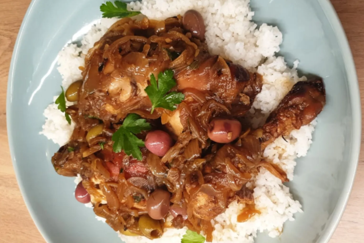

Yassa

Description
Yassa, also known as chicken yassa or poulet yassa, is Senegal's national
dish, a stew consisting of chicken that is marinated in lemon, lots of
onions, and vinegar. The chicken needs to marinate in the mixture for at
least eight hours, making sure that the lemon juice and vinegar take the
bite out of the onions and tenderize the tough poultry found in the
Casamance region.
Chicken pieces are then cooked over medium-high heat until the marinade
becomes a sauce in itself. This process results in an incredibly flavorful
and tender meat that is traditionally served with fluffy rice in brightly
decorated plates. Other examples of good accompaniments include fufu and
couscous, with or without the chickpeas.
Ingredients
- 3 chicken leg quarters (leg and thigh)
- 3 chicken breast halves (bone-in)
- 5 onions (about 2 pounds) peeled, halved, and thinly sliced
- 1 habanero or scotch bonnet pepper
Ingredients for Marinade
- ½ cup fresh lemon juice
- ¼ cup canola oil or olive oil
- 2 tablespoons dijon mustard
- 4 medium garlic cloves, crushed
- ½ teaspoon salt
Ingredients For Browning and Braising the Chicken
- Kosher salt
- Freshly ground black pepper
- 1 tablespoon cooking oil (olive, canola, or grape seed)
- 1 ½ cups low-salt chicken broth (I recommend Swanson's)
Ingredients For Garnishing
- 1 cup pitted green olives, sliced
Steps
Marinate the Chicken
- Put the chicken and onions into a large glass bowl.
- Cut a few slits in the habanero pepper and add it to the bowl.
-
Whisk marinade ingredients in a small bowl and pour on top. Toss to
coat.
-
Cover bowl with plastic wrap and marinate in the fridge for at least 3
hours or, preferably, overnight.
Brown the Chicken and Caramelize the Onions
- Preheat the oven to 350ºF.
-
Heat 1 tablespoon oil over medium-high heat in a large heavy pot or
Dutch oven
-
Remove the chicken from the marinade and sprinkle pieces with a few
pinches of salt and a few grinds of pepper, to taste.
-
Brown chicken on both sides in batches, three pieces at a time, about 5
minutes per batch.
-
Transfer to a plate and set aside. Spoon out some of the chicken fat
from the pot, leaving about one tablespoon.
Caramelize the Onions
-
Set the hot pepper aside and scrape the onions and all the marinade into
the pot over medium-high heat.
-
Cook, stirring, for about 5 minutes to get the onions hot and cooking.
- Cover the pot and turn the heat to medium-low.
-
Let the onions cook, stirring occasionally, for about 10 minutes more,
until they are soft and starting to caramelize.
- Regulate the heat so they don't burn.
Finishing
-
Use a spatula or wooden spoon to move onions aside, as you lay chicken
pieces into the bottom of the pot, and then mound the onions on top of
the chicken pieces.
-
Place the hot pepper in the middle of the pot. Pour in chicken broth.
Turn the heat to medium high and bring the broth to a simmer.
-
Cover the pot and put it in the oven and cook for 1 hour and 20 minutes.